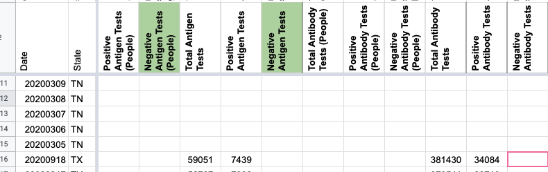
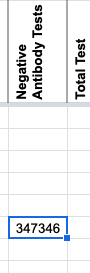
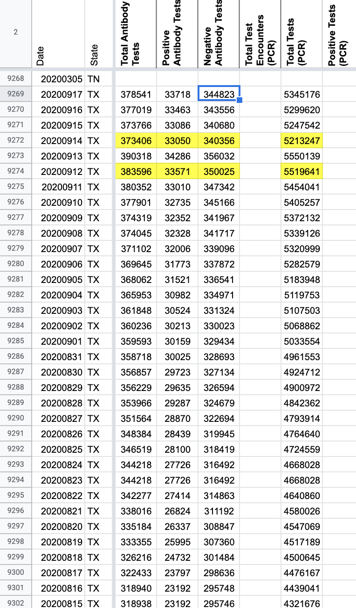
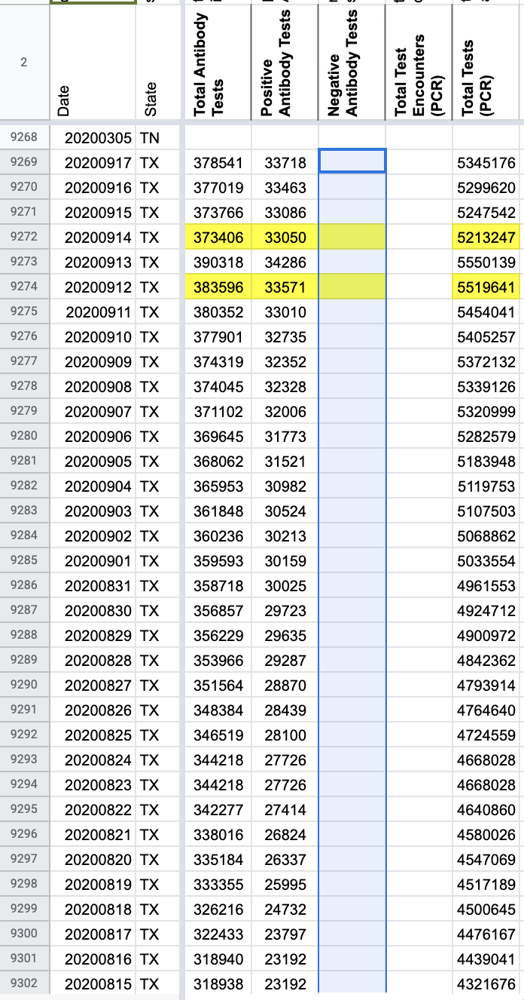

[TX] Removing negative serology/antibody calculation
State or Territory: Texas
Describe the problem: CTP started calculating negative serology tests on 5/23/2020 based on Texas’s Total antibody tests - Positive antibody tests. Slack thread where this metric was added: https://covid-tracking.slack.com/archives/CUQ4MMTPD/p1590265654141800
We are removing this metric.
jaclyde added the label Data quality on September 17, 2020 at 7:05 pm
jaclyde closed the issue on September 17, 2020 at 7:14 pm
karaschechtman commented on September 19, 2020 at 2:48 pm
clearing one additional day  
BEFORE 
AFTER 